Nature of Japan
Japan’s natural landscapes reflect a deep connection between people, environment, and spiritual tradition, shaping both daily life and cultural identity.
Nature plays a central role in Japanese culture and worldview. Mountains, forests, rivers, and the sea are not only physical landscapes but also spiritual and symbolic spaces deeply embedded in tradition, religion, and art. Shinto beliefs emphasize the presence of spirits in natural elements, creating a respectful relationship between humans and their environment.
Due to Japan’s geographic diversity, natural scenery varies greatly across regions. From snowy mountains and volcanic landscapes to coastal cliffs and dense forests, nature offers both dramatic beauty and quiet harmony throughout the year.
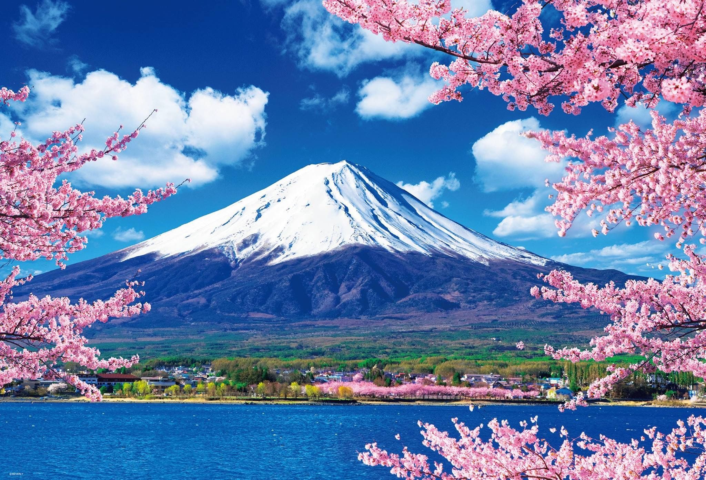
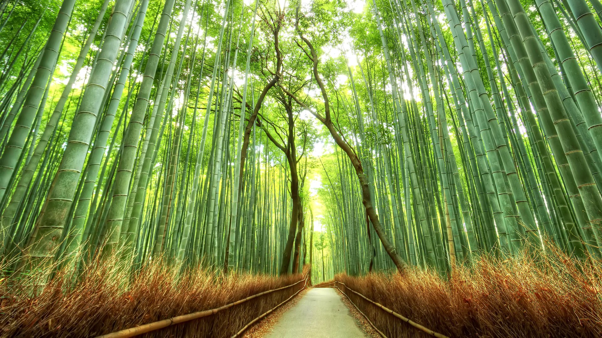
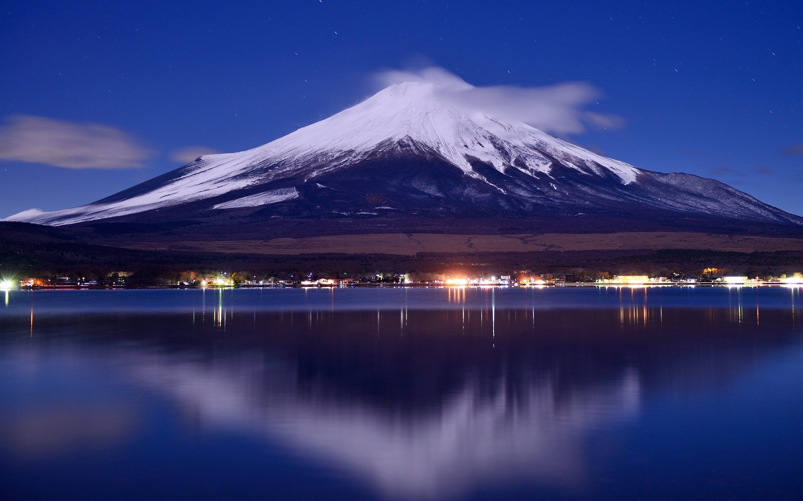
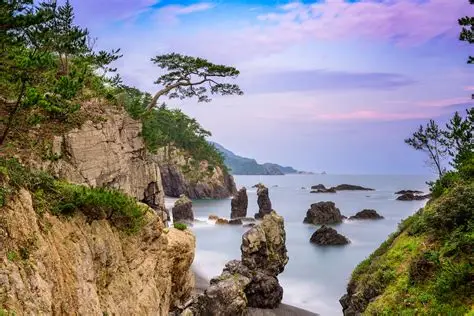
Natural Diversity and Geography
Japan’s geography is defined by its mountainous terrain, volcanic origin, and the surrounding seas that shape both its landscape and way of life. Approximately three-quarters of the country is covered by mountains, leaving limited space for large-scale urban expansion and agriculture. As a result, cities are concentrated in coastal plains, while vast inland areas remain largely untouched and preserved. This geographical structure has strongly influenced how people interact with their environment, encouraging efficient land use, compact urban development, and a deep respect for natural surroundings. Japan’s volcanic activity has also contributed to its diverse natural features, including hot springs, rugged mountain ranges, and fertile soil. These elements have played an important role in daily life, tourism, and traditional practices. National parks, protected forests, and rural landscapes are carefully maintained through environmental policies that emphasize conservation and sustainability. Rather than separating human activity from nature, Japan integrates natural elements into living spaces, cultural traditions, and spiritual beliefs, making the natural environment an essential part of the country’s national identity.
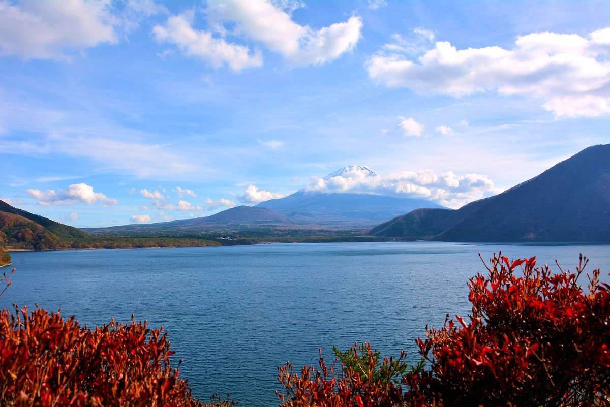
Seasonal Landscapes
Seasonal change is one of the most celebrated and deeply appreciated aspects of nature in Japan. Each season offers a distinct visual, emotional, and cultural experience that influences daily life, traditional customs, and artistic expression. The arrival of spring is marked by cherry blossoms, symbolizing renewal and the fleeting beauty of life, while summer brings lush greenery, festivals, and a strong connection to agricultural cycles. Autumn transforms the landscape with vibrant red and golden leaves, inviting reflection and appreciation of nature’s maturity, while winter introduces quiet, snow-covered scenes that emphasize stillness and introspection. These continuous seasonal transformations shape the Japanese perception of time, impermanence, and harmony with the natural world. Rather than resisting change, Japanese culture embraces it, finding beauty in transition and balance. Seasonal awareness is reflected in poetry, cuisine, architecture, and traditional celebrations, reinforcing a deep respect for nature’s rhythms and the idea that change itself is an essential part of life.
Nature and Cultural Reflection
Nature is deeply reflected in Japanese aesthetics, architecture, and everyday lifestyle, shaping the way spaces are designed and experienced. Traditional gardens, wooden houses, sliding doors, and minimalistic interior layouts are carefully created to emphasize harmony with the surrounding environment rather than dominance over it. Natural materials, soft transitions between indoor and outdoor spaces, and an appreciation for simplicity allow nature to remain a constant presence in daily life. This philosophy continues to influence contemporary Japan, where traditional principles coexist with modern design and technology. Sustainable architecture, energy-efficient solutions, and environmentally conscious urban planning reflect a growing awareness of ecological responsibility. By combining centuries-old aesthetic values with modern innovation, Japan demonstrates how respect for nature can guide development toward a more balanced and sustainable future.
Visual Highlights of Japanese Nature
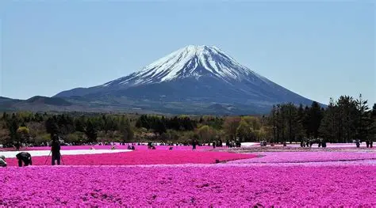
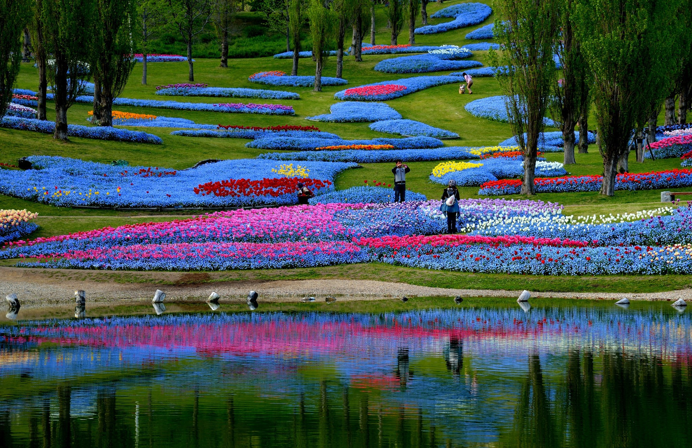
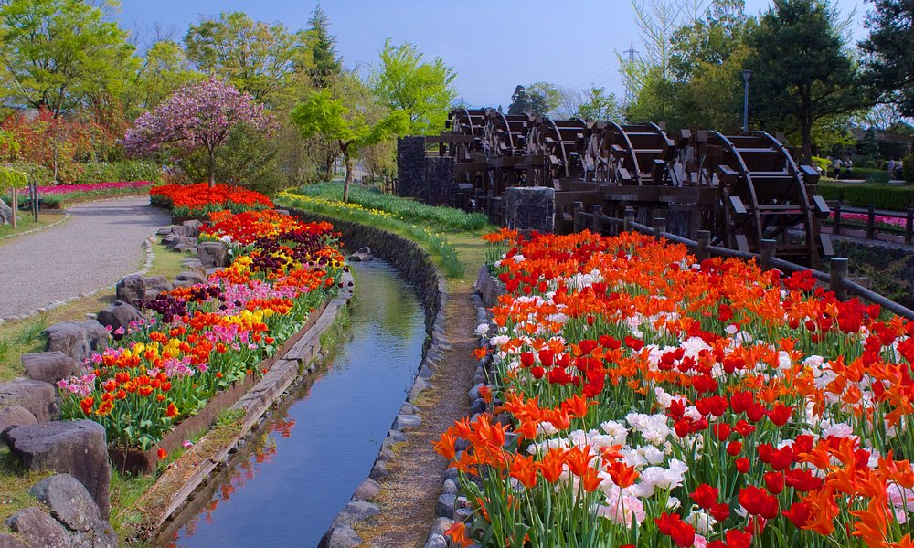
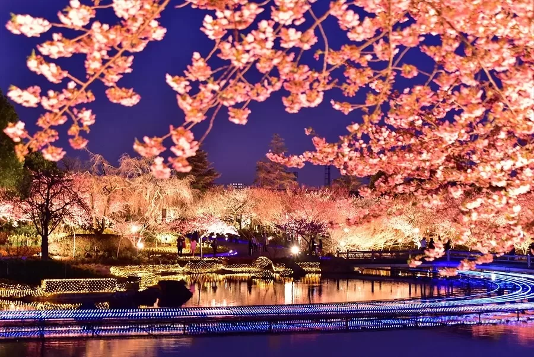
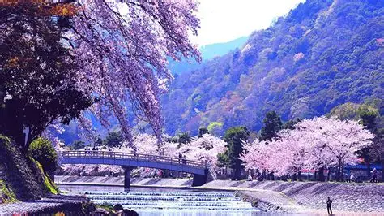
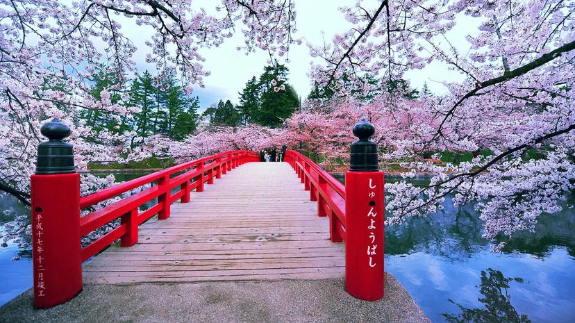